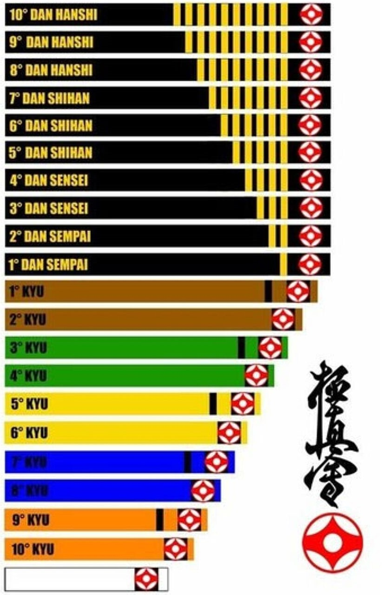

Впервые разноцветные пояса с разбивкой на 10-1 кю в Киокусинкай были ведены по инициативе Тадаши Накамуры, одного из учеников Масутацу Оямы.
До этого существовало всего 3 градации: зеленый, коричневый (ученические степени) и черный (мастерский).
Пояс - это не только веревка, которой подвязывают куртку, это символы усердия и работоспособности ученика, награда за все его усилия. Нельзя рассматривать экзамен на следующую степень только как демонстрацию технической и физической кондиции. Необходимо доказать, что ваш уровень зрелости соответствует цвету пояса, что вы стали еще более рассудительным и уравновешенным. Не нужно поддаваться искушению, быстро прорваться через все степени, вначале учатся ползать, а потом ходить (каждому поясу свое время). Самым главным врагом каратиста является тщеславие.